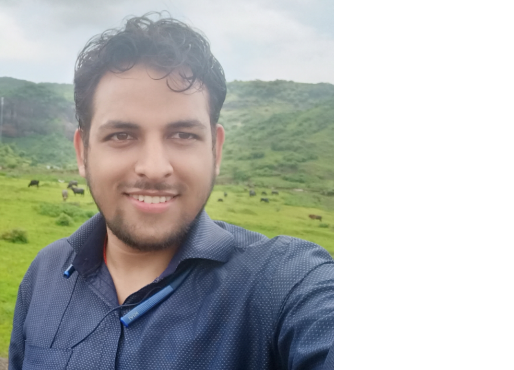

Aman Kumar Tiwari

Summary
Motivated individual who loves the dust and palace of
web developement willing to work in an growth environment.
Education
-
Mumbai University
Bachelor of Computer science-2018-2021
-
UP Board
Formal schooling-till 2018
Work Experience
-
Tata Consultancy services
Aug 2018-Present
- Worked in Project management
- Assisted on account level PMO operations
- Ensured on time delivery of project deliverbles
-
Internship Byju's Edtech
July 2021-Aug 2021
- Handled Sales process
- Pitched edtech products to new customers
- Brought conversion
-
Intershala campus ambassdor
July 2018-Aug 2020
- Promoted courses on college campus
- Created a 500 nos learners community in my college
- Expanded Internshala business by promoting courses to students
Skill
- html ★★★★★
- CSS ★★★★
- MS office ★★★★
- Communication and negotiation ★★★★
Award and Certifications
- Web developement certificate by Angela Yu
- Certificate in project management by google
Others